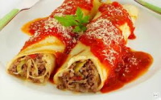

Cardápio
*Todos os nossos pratos contém 800gr e servem bem 2 pessoas.Temos vinho da casa. Preços sob consulta!Fettuccine - Macarrão tipo Talharim Massa Fresca, Molho Branco Bechamel, cubos de presunto, cubos de Mussarela e Ervilhas frescas, compõem o sabor e aroma desse delicioso prato! Regado com parmesão, azeite de oliva extra virgem e orégano .
Lasanha a Bolonhesa - Patinho Moído refogado em um deleicoso molho vermelho distribuido e intercalado em camadas de massa para lasanha, queijo mussarela, presunto, molho branco bechamel e parmesão ralado. Regado com delicioso azeite de oliva extra virgem e manjericão.
Nhoque - Recheado com mussarela e regado com um delicioso molho de tomate fresco também artesanal, parmesão ralado e manjerição.
Panqueca - Carne tipo patinho moído e refogado, molho de tomate artesanal e regado com parmesão e azeite de oliva extra virgem.
Raviolli - Recheado com frango, coberto com molho branco tipo bechamel. Regado com parmesão, orégano e salsinha.